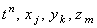

|
Используя введённые обозначения, запишем аппроксимацию дифференциальных операторов,
составляющих уравнение (9.1), в точке . Для аппроксимации производной функции u по времени обычно используется
правая конечная разность (со стабилизацией значений независимых переменных x, y и z
в точках с порядковыми номерами j, k и m, соответственно):
Для аппроксимации производных второго порядка будем использовать разностный оператор (2.12)
(со стабилизацией значения независимой переменной t в точке с порядковым номером n):
Подставляя записанные разностные операторы в дифференциальное уравнение (9.1),
получаем явную разностную схему, аппроксимирующую уравнение (9.1) в точке :
| |
 |
(9.3) |
Рассматривая аппроксимацию производных второго порядка на (n + 1)-ом шаге по времени, получаем неявную разностную схему:
| |
 |
(9.4) |
Учитывая порядок аппроксимации разностных операторов,
использованных при составлении разностных схем (9.3), (9.4), легко видеть, что они
имеют первый порядок аппроксимации по времени и второй - по каждой из координат:
|